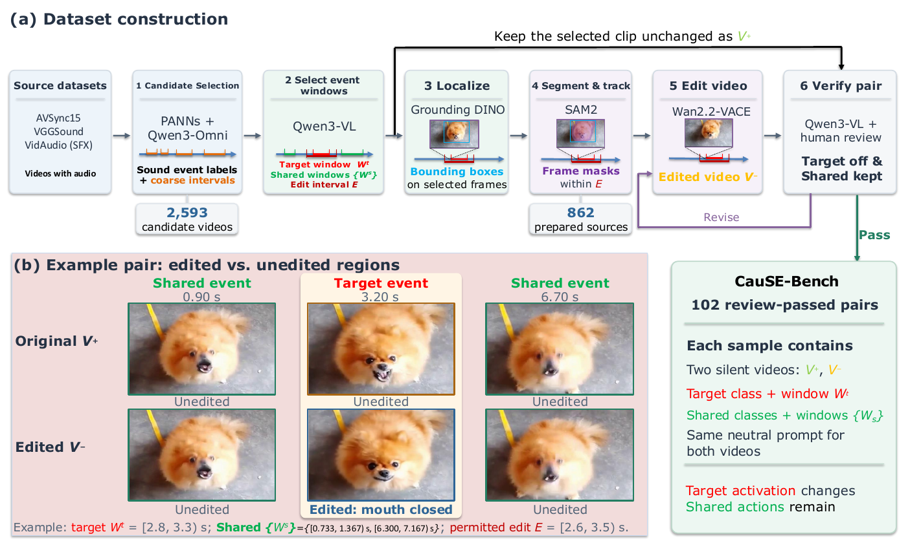

Results
| CauSE metrics (ours, %) | Audio metrics | AV metrics | ||||||||
|---|---|---|---|---|---|---|---|---|---|---|
| Model | Hit ↑ | Reject ↑ | Keep ↑ | CauSE-Acc ↑ | FAD ↓ | FD ↓ | KL ↓ | IS ↑ | IB (%) ↑ | DeSync (s) ↓ |
| Original GT audio | 98.99 | – | 93.90 | – | 0.000 | 0.000 | 0.000 | 4.835 | 41.88 | 0.197 |
| Diff-Foley | 34.33 | 82.60 | 24.22 | 9.52 | 7.754 | 56.761 | 1.772 | 4.299 | 28.45 | 0.955 |
| HunyuanVideo-Foley | 42.43 | 81.02 | 24.35 | 10.26 | 6.977 | 52.645 | 1.716 | 4.094 | 29.11 | 0.272 |
| FoleyCrafter | 52.58 | 53.31 | 39.29 | 8.87 | 6.481 | 50.218 | 1.153 | 4.117 | 36.03 | 1.124 |
| MMAudio (medium 44k) | 74.17 | 63.21 | 56.87 | 29.43 | 2.307 | 24.917 | 0.554 | 4.503 | 39.51 | 0.274 |
| AudioX-Turbo | 55.69 | 63.70 | 37.82 | 8.13 | 5.535 | 34.826 | 1.116 | 4.847 | 33.14 | 1.057 |
| UniFlow-Audio (v1.1 Base) | 55.31 | 78.81 | 32.38 | 14.59 | 10.886 | 45.533 | 1.380 | 4.556 | 31.56 | 0.348 |
Table 1. Results on CauSE-Bench. Supplementary metrics are computed on factual outputs only. Best model results are shown in bold; GT is excluded.
Video Demos
CauSE-Bench
CauSE-Bench contains 102 factual–counterfactual video pairs across nine sound-event classes. Each edit deactivates one target action while preserving the source, scene, and shared events. CauSE-Acc measures target generation, target suppression, and shared-event retention.
